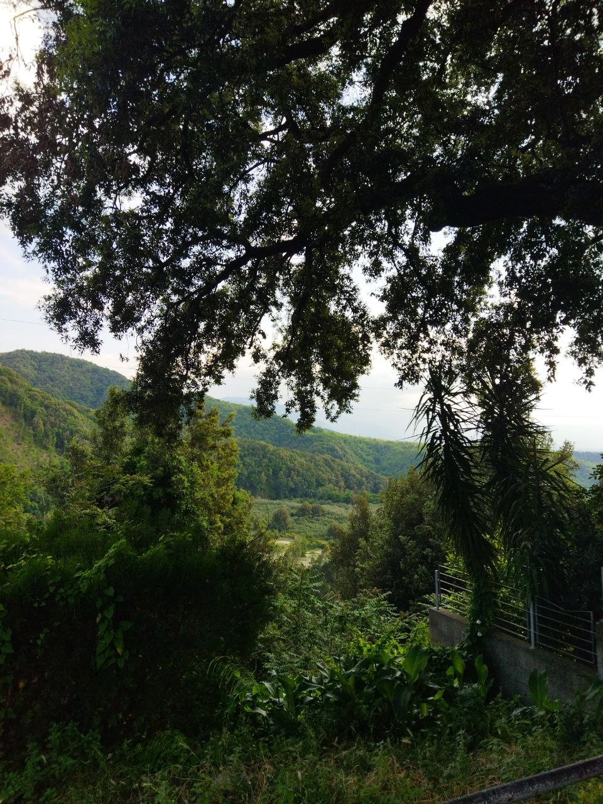

Cittanova RC is a small city located in the south of Italy, in the region of Calabria.
Because I always carry my phone on me, I managed to capture some of these landscapes or just in general pretty things on camera. Here is a photo I took from one of many hangcliffs in Cittanova, since this city is located right on the mountain rise! ✿
🠮🠮🠮
On top of the page you can find a link to a gallery of some of the prettiest pics I took that I think illustrate the city of Cittanova best, and also a page with my contact information!